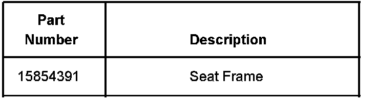
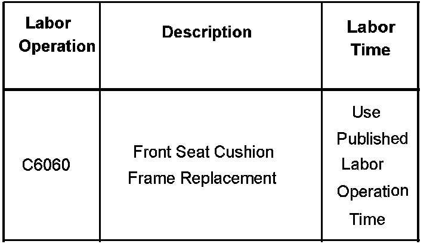

Seats - Squeak Or Creak On Driver Side
Bulletin No.: 07-08-50-010Date: May 09, 2007
TECHNICAL
Subject:
Driver Seat Squeak or Creak Noise (Replace Bottom Seat Frame)
Models:
2007 Cadillac Escalade Models
2007 Chevrolet Avalanche, Silverado, Suburban, Tahoe
2007 GMC Sierra, Yukon Models
Built Prior to December 15, 2006
Condition
Some customers may comment on a squeak or creak noise in the driver seat.
Cause
This noise may be coming from the lower seat frame. The spring may be making hard contact with the frame.
Correction
Replace the lower seat frame. Refer to the Front Seat Cushion Frame Replacement procedure in SI

Parts Information
Warranty Information

For vehicles repaired under warranty, use the table.

Disclaimer